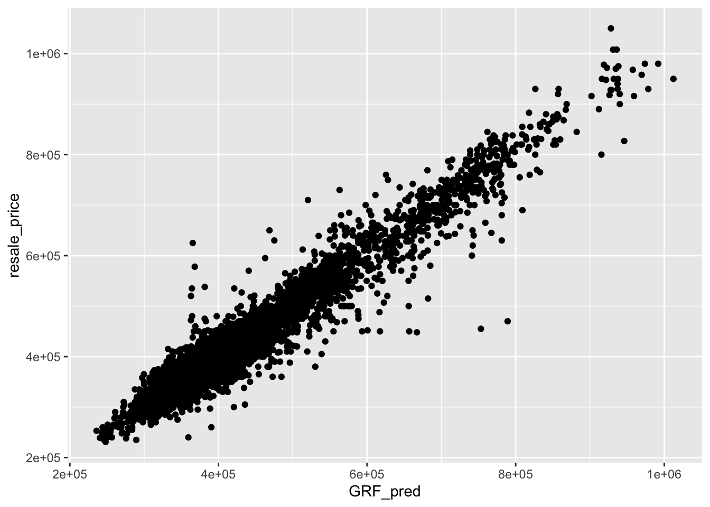

pacman::p_load(sf, spdep, GWmodel, SpatialML,
tmap, rsample, Metrics, tidyverse)Hands-on_Ex08
14 Geographically Weighted Predictive Models
14.1 Overview
Predictive modelling uses statistical learning or machine learning techniques to predict outcomes. By and large, the event one wants to predict is in the future. However, a set of known outcome and predictors (also known as variables) will be used to calibrate the predictive models.
Geospatial predictive modelling is conceptually rooted in the principle that the occurrences of events being modeled are limited in distribution. When geographically referenced data are used, occurrences of events are neither uniform nor random in distribution over space. There are geospatial factors (infrastructure, sociocultural, topographic, etc.) that constrain and influence where the locations of events occur. Geospatial predictive modeling attempts to describe those constraints and influences by spatially correlating occurrences of historical geospatial locations with environmental factors that represent those constraints and influences.
14.1.1 Learning outcome
In this in-class exercise, you will learn how to build predictive model by using geographical random forest method. By the end of this hands-on exercise, you will acquire the skills of:
preparing training and test data sets by using appropriate data sampling methods, calibrating predictive models by using both geospatial statistical learning and machine learning methods, comparing and selecting the best model for predicting the future outcome, predicting the future outcomes by using the best model calibrated.
14.2 The Data
Aspatial dataset: HDB Resale data: a list of HDB resale transacted prices in Singapore from Jan 2017 onwards. It is in csv format which can be downloaded from Data.gov.sg.
Geospatial dataset: MP14_SUBZONE_WEB_PL: a polygon feature data providing information of URA 2014 Master Plan Planning Subzone boundary data. It is in ESRI shapefile format. This data set was also downloaded from Data.gov.sg
Locational factors with geographic coordinates: Eldercare data is a list of eldercare in Singapore. It is in shapefile format. Hawker Centre data is a list of hawker centres in Singapore. It is in geojson format. Parks data is a list of parks in Singapore. It is in geojson format. Supermarket data is a list of supermarkets in Singapore. It is in geojson format. CHAS clinics data is a list of CHAS clinics in Singapore. It is in geojson format. Childcare service data is a list of childcare services in Singapore. It is in geojson format. Kindergartens data is a list of kindergartens in Singapore. It is in geojson format.
MRT data is a list of MRT/LRT stations in Singapore with the station names and codes. It is in shapefile format. Bus stops data is a list of bus stops in Singapore. It is in shapefile format.
Locational factors without geographic coordinates: Primary school data is extracted from the list on General information of schools from data.gov portal. It is in csv format. CBD coordinates obtained from Google. Shopping malls data is a list of Shopping malls in Singapore obtained from Wikipedia. Good primary schools is a list of primary schools that are ordered in ranking in terms of popularity and this can be found at Local Salary Forum.
14.3 Installing and Loading R packages
14.4 Preparing Data
14.4.1 Reading data file to rds
mdata <- read_rds("data/model/mdata.rds")14.4.2 Data Sampling
The entire data are split into training and test data sets with 65% and 35% respectively by using initial_split() of rsample package. rsample is one of the package of tigymodels.
set.seed(1234)
resale_split <- initial_split(mdata,
prop = 6.5/10,)
train_data <- training(resale_split)
test_data <- testing(resale_split)write_rds(train_data, "data/model/train_data.rds")
write_rds(test_data, "data/model/test_data.rds")14.5 Computing Correlation Matrix
mdata_nogeo <- mdata %>%
st_drop_geometry()
corrplot::corrplot(cor(mdata_nogeo[, 2:17]),
diag = FALSE,
order = "AOE",
tl.pos = "td",
tl.cex = 0.5,
method = "number",
type = "upper")
14.6 Retriving the Stored Data
train_data <- read_rds("data/model/train_data.rds")
test_data <- read_rds("data/model/test_data.rds")14.7 Building a non-spatial multiple linear regression
price_mlr <- lm(resale_price ~ floor_area_sqm +
storey_order + remaining_lease_mths +
PROX_CBD + PROX_ELDERLYCARE + PROX_HAWKER +
PROX_MRT + PROX_PARK + PROX_MALL +
PROX_SUPERMARKET + WITHIN_350M_KINDERGARTEN +
WITHIN_350M_CHILDCARE + WITHIN_350M_BUS +
WITHIN_1KM_PRISCH,
data=train_data)
summary(price_mlr)
Call:
lm(formula = resale_price ~ floor_area_sqm + storey_order + remaining_lease_mths +
PROX_CBD + PROX_ELDERLYCARE + PROX_HAWKER + PROX_MRT + PROX_PARK +
PROX_MALL + PROX_SUPERMARKET + WITHIN_350M_KINDERGARTEN +
WITHIN_350M_CHILDCARE + WITHIN_350M_BUS + WITHIN_1KM_PRISCH,
data = train_data)
Residuals:
Min 1Q Median 3Q Max
-205193 -39120 -1930 36545 472355
Coefficients:
Estimate Std. Error t value Pr(>|t|)
(Intercept) 107601.073 10601.261 10.150 < 2e-16 ***
floor_area_sqm 2780.698 90.579 30.699 < 2e-16 ***
storey_order 14299.298 339.115 42.167 < 2e-16 ***
remaining_lease_mths 344.490 4.592 75.027 < 2e-16 ***
PROX_CBD -16930.196 201.254 -84.124 < 2e-16 ***
PROX_ELDERLYCARE -14441.025 994.867 -14.516 < 2e-16 ***
PROX_HAWKER -19265.648 1273.597 -15.127 < 2e-16 ***
PROX_MRT -32564.272 1744.232 -18.670 < 2e-16 ***
PROX_PARK -5712.625 1483.885 -3.850 0.000119 ***
PROX_MALL -14717.388 2007.818 -7.330 2.47e-13 ***
PROX_SUPERMARKET -26881.938 4189.624 -6.416 1.46e-10 ***
WITHIN_350M_KINDERGARTEN 8520.472 632.812 13.464 < 2e-16 ***
WITHIN_350M_CHILDCARE -4510.650 354.015 -12.741 < 2e-16 ***
WITHIN_350M_BUS 813.493 222.574 3.655 0.000259 ***
WITHIN_1KM_PRISCH -8010.834 491.512 -16.298 < 2e-16 ***
---
Signif. codes: 0 '***' 0.001 '**' 0.01 '*' 0.05 '.' 0.1 ' ' 1
Residual standard error: 61650 on 10320 degrees of freedom
Multiple R-squared: 0.7373, Adjusted R-squared: 0.737
F-statistic: 2069 on 14 and 10320 DF, p-value: < 2.2e-16write_rds(price_mlr, "data/model/price_mlr.rds" ) 14.8 gwr predictive method
14.8.1 Converting the sf data.frame to SpatialPointDataFrame
train_data_sp <- as_Spatial(train_data)
train_data_spclass : SpatialPointsDataFrame
features : 10335
extent : 11597.31, 42623.63, 28217.39, 48741.06 (xmin, xmax, ymin, ymax)
crs : +proj=tmerc +lat_0=1.36666666666667 +lon_0=103.833333333333 +k=1 +x_0=28001.642 +y_0=38744.572 +ellps=WGS84 +towgs84=0,0,0,0,0,0,0 +units=m +no_defs
variables : 17
names : resale_price, floor_area_sqm, storey_order, remaining_lease_mths, PROX_CBD, PROX_ELDERLYCARE, PROX_HAWKER, PROX_MRT, PROX_PARK, PROX_GOOD_PRISCH, PROX_MALL, PROX_CHAS, PROX_SUPERMARKET, WITHIN_350M_KINDERGARTEN, WITHIN_350M_CHILDCARE, ...
min values : 218000, 74, 1, 555, 0.999393538715878, 1.98943787433087e-08, 0.0333358643817954, 0.0220407324774434, 0.0441643212802781, 0.0652540365486641, 0, 6.20621206270077e-09, 1.21715176356525e-07, 0, 0, ...
max values : 1186888, 133, 17, 1164, 19.6500691667807, 3.30163731686804, 2.86763031236184, 2.13060636038504, 2.41313695915468, 10.6223726149914, 2.27100643784442, 0.808332738794272, 1.57131703651196, 7, 20, ... ###14.8.2 Computing adaptive bandwidth
bw_adaptive <- bw.gwr(resale_price ~ floor_area_sqm +
storey_order + remaining_lease_mths +
PROX_CBD + PROX_ELDERLYCARE + PROX_HAWKER +
PROX_MRT + PROX_PARK + PROX_MALL +
PROX_SUPERMARKET + WITHIN_350M_KINDERGARTEN +
WITHIN_350M_CHILDCARE + WITHIN_350M_BUS +
WITHIN_1KM_PRISCH,
data=train_data_sp,
approach="CV",
kernel="gaussian",
adaptive=TRUE,
longlat=FALSE)Take a cup of tea and have a break, it will take a few minutes.
-----A kind suggestion from GWmodel development group
Adaptive bandwidth: 6395 CV score: 3.60536e+13
Adaptive bandwidth: 3960 CV score: 3.320316e+13
Adaptive bandwidth: 2455 CV score: 2.928339e+13
Adaptive bandwidth: 1524 CV score: 2.550957e+13
Adaptive bandwidth: 950 CV score: 1.95632e+13
Adaptive bandwidth: 593 CV score: 1.58347e+13
Adaptive bandwidth: 375 CV score: 1.310042e+13
Adaptive bandwidth: 237 CV score: 1.113152e+13
Adaptive bandwidth: 155 CV score: 9.572037e+12
Adaptive bandwidth: 101 CV score: 8.457003e+12
Adaptive bandwidth: 71 CV score: 7.605058e+12
Adaptive bandwidth: 49 CV score: 6.966278e+12
Adaptive bandwidth: 38 CV score: 8.841916e+12
Adaptive bandwidth: 58 CV score: 7.275234e+12
Adaptive bandwidth: 45 CV score: 6.871966e+12
Adaptive bandwidth: 41 CV score: 6.793327e+12
Adaptive bandwidth: 40 CV score: 6.780974e+12
Adaptive bandwidth: 38 CV score: 8.841916e+12
Adaptive bandwidth: 40 CV score: 6.780974e+12 write_rds(bw_adaptive, "data/model/bw_adaptive.rds")14.8.3 Constructing the adaptive bandwidth gwr model
bw_adaptive <- read_rds("data/model/bw_adaptive.rds")
gwr_adaptive <- gwr.basic(formula = resale_price ~
floor_area_sqm + storey_order +
remaining_lease_mths + PROX_CBD +
PROX_ELDERLYCARE + PROX_HAWKER +
PROX_MRT + PROX_PARK + PROX_MALL +
PROX_SUPERMARKET + WITHIN_350M_KINDERGARTEN +
WITHIN_350M_CHILDCARE + WITHIN_350M_BUS +
WITHIN_1KM_PRISCH,
data=train_data_sp,
bw=bw_adaptive,
kernel = 'gaussian',
adaptive=TRUE,
longlat = FALSE)
write_rds(gwr_adaptive, "data/model/gwr_adaptive.rds")14.8.4 Retrieve gwr output object
gwr_adaptive <- read_rds("data/model/gwr_adaptive.rds")
gwr_adaptive ***********************************************************************
* Package GWmodel *
***********************************************************************
Program starts at: 2024-11-11 03:52:43.83451
Call:
gwr.basic(formula = resale_price ~ floor_area_sqm + storey_order +
remaining_lease_mths + PROX_CBD + PROX_ELDERLYCARE + PROX_HAWKER +
PROX_MRT + PROX_PARK + PROX_MALL + PROX_SUPERMARKET + WITHIN_350M_KINDERGARTEN +
WITHIN_350M_CHILDCARE + WITHIN_350M_BUS + WITHIN_1KM_PRISCH,
data = train_data_sp, bw = bw_adaptive, kernel = "gaussian",
adaptive = TRUE, longlat = FALSE)
Dependent (y) variable: resale_price
Independent variables: floor_area_sqm storey_order remaining_lease_mths PROX_CBD PROX_ELDERLYCARE PROX_HAWKER PROX_MRT PROX_PARK PROX_MALL PROX_SUPERMARKET WITHIN_350M_KINDERGARTEN WITHIN_350M_CHILDCARE WITHIN_350M_BUS WITHIN_1KM_PRISCH
Number of data points: 10335
***********************************************************************
* Results of Global Regression *
***********************************************************************
Call:
lm(formula = formula, data = data)
Residuals:
Min 1Q Median 3Q Max
-205193 -39120 -1930 36545 472355
Coefficients:
Estimate Std. Error t value Pr(>|t|)
(Intercept) 107601.073 10601.261 10.150 < 2e-16 ***
floor_area_sqm 2780.698 90.579 30.699 < 2e-16 ***
storey_order 14299.298 339.115 42.167 < 2e-16 ***
remaining_lease_mths 344.490 4.592 75.027 < 2e-16 ***
PROX_CBD -16930.196 201.254 -84.124 < 2e-16 ***
PROX_ELDERLYCARE -14441.025 994.867 -14.516 < 2e-16 ***
PROX_HAWKER -19265.648 1273.597 -15.127 < 2e-16 ***
PROX_MRT -32564.272 1744.232 -18.670 < 2e-16 ***
PROX_PARK -5712.625 1483.885 -3.850 0.000119 ***
PROX_MALL -14717.388 2007.818 -7.330 2.47e-13 ***
PROX_SUPERMARKET -26881.938 4189.624 -6.416 1.46e-10 ***
WITHIN_350M_KINDERGARTEN 8520.472 632.812 13.464 < 2e-16 ***
WITHIN_350M_CHILDCARE -4510.650 354.015 -12.741 < 2e-16 ***
WITHIN_350M_BUS 813.493 222.574 3.655 0.000259 ***
WITHIN_1KM_PRISCH -8010.834 491.512 -16.298 < 2e-16 ***
---Significance stars
Signif. codes: 0 '***' 0.001 '**' 0.01 '*' 0.05 '.' 0.1 ' ' 1
Residual standard error: 61650 on 10320 degrees of freedom
Multiple R-squared: 0.7373
Adjusted R-squared: 0.737
F-statistic: 2069 on 14 and 10320 DF, p-value: < 2.2e-16
***Extra Diagnostic information
Residual sum of squares: 3.922202e+13
Sigma(hat): 61610.08
AIC: 257320.2
AICc: 257320.3
BIC: 247249
***********************************************************************
* Results of Geographically Weighted Regression *
***********************************************************************
*********************Model calibration information*********************
Kernel function: gaussian
Adaptive bandwidth: 40 (number of nearest neighbours)
Regression points: the same locations as observations are used.
Distance metric: Euclidean distance metric is used.
****************Summary of GWR coefficient estimates:******************
Min. 1st Qu. Median 3rd Qu.
Intercept -3.2594e+08 -4.7727e+05 -8.3004e+03 5.5025e+05
floor_area_sqm -2.8714e+04 1.4475e+03 2.3011e+03 3.3900e+03
storey_order 3.3186e+03 8.5899e+03 1.0826e+04 1.3397e+04
remaining_lease_mths -1.4431e+03 2.6063e+02 3.9048e+02 5.2865e+02
PROX_CBD -1.0837e+07 -5.7697e+04 -1.3787e+04 2.6552e+04
PROX_ELDERLYCARE -3.2291e+07 -4.0643e+04 1.0562e+04 6.1054e+04
PROX_HAWKER -2.3985e+08 -5.1365e+04 3.0026e+03 6.4287e+04
PROX_MRT -1.1660e+07 -1.0488e+05 -4.9373e+04 5.1037e+03
PROX_PARK -6.5961e+06 -4.8671e+04 -8.8128e+02 5.3498e+04
PROX_MALL -1.8112e+07 -7.4238e+04 -1.3982e+04 4.9779e+04
PROX_SUPERMARKET -4.5761e+06 -6.3461e+04 -1.7429e+04 3.5616e+04
WITHIN_350M_KINDERGARTEN -4.1881e+05 -6.0040e+03 9.0209e+01 4.7127e+03
WITHIN_350M_CHILDCARE -1.0273e+05 -2.2375e+03 2.6668e+02 2.6388e+03
WITHIN_350M_BUS -1.1757e+05 -1.4719e+03 1.1626e+02 1.7584e+03
WITHIN_1KM_PRISCH -6.6465e+05 -5.5959e+03 2.6916e+02 5.7500e+03
Max.
Intercept 1.6493e+08
floor_area_sqm 5.0907e+04
storey_order 2.9537e+04
remaining_lease_mths 1.8119e+03
PROX_CBD 2.2489e+07
PROX_ELDERLYCARE 8.2444e+07
PROX_HAWKER 5.9654e+06
PROX_MRT 2.0189e+08
PROX_PARK 1.5224e+07
PROX_MALL 1.0443e+07
PROX_SUPERMARKET 3.8330e+06
WITHIN_350M_KINDERGARTEN 6.6799e+05
WITHIN_350M_CHILDCARE 1.0802e+05
WITHIN_350M_BUS 3.7313e+04
WITHIN_1KM_PRISCH 5.0262e+05
************************Diagnostic information*************************
Number of data points: 10335
Effective number of parameters (2trace(S) - trace(S'S)): 1730.101
Effective degrees of freedom (n-2trace(S) + trace(S'S)): 8604.899
AICc (GWR book, Fotheringham, et al. 2002, p. 61, eq 2.33): 238871.8
AIC (GWR book, Fotheringham, et al. 2002,GWR p. 96, eq. 4.22): 237036.9
BIC (GWR book, Fotheringham, et al. 2002,GWR p. 61, eq. 2.34): 238209
Residual sum of squares: 4.829177e+12
R-square value: 0.9676571
Adjusted R-square value: 0.9611535
***********************************************************************
Program stops at: 2024-11-11 03:53:25.624059 14.8.5 Converting the test data from sf data.frame to SpatialPointDataFrame
test_data_sp <- test_data %>%
as_Spatial()
test_data_spclass : SpatialPointsDataFrame
features : 5566
extent : 11597.31, 42623.63, 28287.8, 48669.59 (xmin, xmax, ymin, ymax)
crs : +proj=tmerc +lat_0=1.36666666666667 +lon_0=103.833333333333 +k=1 +x_0=28001.642 +y_0=38744.572 +ellps=WGS84 +towgs84=0,0,0,0,0,0,0 +units=m +no_defs
variables : 17
names : resale_price, floor_area_sqm, storey_order, remaining_lease_mths, PROX_CBD, PROX_ELDERLYCARE, PROX_HAWKER, PROX_MRT, PROX_PARK, PROX_GOOD_PRISCH, PROX_MALL, PROX_CHAS, PROX_SUPERMARKET, WITHIN_350M_KINDERGARTEN, WITHIN_350M_CHILDCARE, ...
min values : 230888, 74, 1, 546, 1.00583660772922, 3.34897933104965e-07, 0.0474019664161957, 0.0414043955932523, 0.0502664084494264, 0.0907500295577619, 0, 4.55547870890763e-09, 1.21715176356525e-07, 0, 0, ...
max values : 1050000, 138, 14, 1151, 19.632402730488, 3.30163731686804, 2.83106651960209, 2.13060636038504, 2.41313695915468, 10.6169590126272, 2.26056404492346, 0.79249074802552, 1.53786629004208, 7, 16, ... 14.8.6 Computing adaptive bandwidth for the test data
gwr_bw_test_adaptive <- bw.gwr(resale_price ~ floor_area_sqm +
storey_order + remaining_lease_mths +
PROX_CBD + PROX_ELDERLYCARE + PROX_HAWKER +
PROX_MRT + PROX_PARK + PROX_MALL +
PROX_SUPERMARKET + WITHIN_350M_KINDERGARTEN +
WITHIN_350M_CHILDCARE + WITHIN_350M_BUS +
WITHIN_1KM_PRISCH,
data=test_data_sp,
approach="CV",
kernel="gaussian",
adaptive=TRUE,
longlat=FALSE)Take a cup of tea and have a break, it will take a few minutes.
-----A kind suggestion from GWmodel development group
Adaptive bandwidth: 3447 CV score: 1.902155e+13
Adaptive bandwidth: 2138 CV score: 1.752645e+13
Adaptive bandwidth: 1328 CV score: 1.556299e+13
Adaptive bandwidth: 828 CV score: 1.357498e+13
Adaptive bandwidth: 518 CV score: 1.030751e+13
Adaptive bandwidth: 327 CV score: 8.348364e+12
Adaptive bandwidth: 208 CV score: 6.860544e+12
Adaptive bandwidth: 135 CV score: 5.969504e+12
Adaptive bandwidth: 89 CV score: 5.242221e+12
Adaptive bandwidth: 62 CV score: 4.742767e+12
Adaptive bandwidth: 43 CV score: 4.357839e+12
Adaptive bandwidth: 34 CV score: 4.125848e+12
Adaptive bandwidth: 25 CV score: 4.056699e+12
Adaptive bandwidth: 23 CV score: 4.236349e+13
Adaptive bandwidth: 30 CV score: 4.074906e+12
Adaptive bandwidth: 25 CV score: 4.056699e+12 14.8.7 Computing predicted values of the test data
{r} # gwr_pred <- gwr.predict(formula = resale_price ~ # floor_area_sqm + storey_order + # remaining_lease_mths + PROX_CBD + # PROX_ELDERLYCARE + PROX_HAWKER + # PROX_MRT + PROX_PARK + PROX_MALL + # PROX_SUPERMARKET + WITHIN_350M_KINDERGARTEN + # WITHIN_350M_CHILDCARE + WITHIN_350M_BUS + # WITHIN_1KM_PRISCH, # data=train_data_sp, # predictdata = test_data_sp, # bw=25, # kernel = 'gaussian', # adaptive=TRUE, # longlat = FALSE) #
14.9 Preparing coordinates data
###14.9.1 Extracting coordinates data
coords <- st_coordinates(mdata)
coords_train <- st_coordinates(train_data)
coords_test <- st_coordinates(test_data)
coords_train <- write_rds(coords_train, "data/model/coords_train.rds" )
coords_test <- write_rds(coords_test, "data/model/coords_test.rds" )14.9.2 Droping geometry field
train_data <- train_data %>%
st_drop_geometry()###14.10 Calibrating Random Forest Model
set.seed(1234)
rf <- ranger(resale_price ~ floor_area_sqm + storey_order +
remaining_lease_mths + PROX_CBD + PROX_ELDERLYCARE +
PROX_HAWKER + PROX_MRT + PROX_PARK + PROX_MALL +
PROX_SUPERMARKET + WITHIN_350M_KINDERGARTEN +
WITHIN_350M_CHILDCARE + WITHIN_350M_BUS +
WITHIN_1KM_PRISCH,
data=train_data)
rfRanger result
Call:
ranger(resale_price ~ floor_area_sqm + storey_order + remaining_lease_mths + PROX_CBD + PROX_ELDERLYCARE + PROX_HAWKER + PROX_MRT + PROX_PARK + PROX_MALL + PROX_SUPERMARKET + WITHIN_350M_KINDERGARTEN + WITHIN_350M_CHILDCARE + WITHIN_350M_BUS + WITHIN_1KM_PRISCH, data = train_data)
Type: Regression
Number of trees: 500
Sample size: 10335
Number of independent variables: 14
Mtry: 3
Target node size: 5
Variable importance mode: none
Splitrule: variance
OOB prediction error (MSE): 731404460
R squared (OOB): 0.9493789 write_rds(rf, "data/model/rf.rds")
rf <- read_rds("data/model/rf.rds")
rfRanger result
Call:
ranger(resale_price ~ floor_area_sqm + storey_order + remaining_lease_mths + PROX_CBD + PROX_ELDERLYCARE + PROX_HAWKER + PROX_MRT + PROX_PARK + PROX_MALL + PROX_SUPERMARKET + WITHIN_350M_KINDERGARTEN + WITHIN_350M_CHILDCARE + WITHIN_350M_BUS + WITHIN_1KM_PRISCH, data = train_data)
Type: Regression
Number of trees: 500
Sample size: 10335
Number of independent variables: 14
Mtry: 3
Target node size: 5
Variable importance mode: none
Splitrule: variance
OOB prediction error (MSE): 731404460
R squared (OOB): 0.9493789 14.11 Calibrating Geographical Random Forest Model
14.11.1 Calibrating using training data
train_data_nogeom <- train_data %>%
st_drop_geometry()
set.seed(1234)
gwRF_adaptive <- grf(formula = resale_price ~ floor_area_sqm + storey_order +
remaining_lease_mths + PROX_CBD + PROX_ELDERLYCARE +
PROX_HAWKER + PROX_MRT + PROX_PARK + PROX_MALL +
PROX_SUPERMARKET + WITHIN_350M_KINDERGARTEN +
WITHIN_350M_CHILDCARE + WITHIN_350M_BUS +
WITHIN_1KM_PRISCH,
dframe=train_data_nogeom,
bw=25,
kernel="adaptive",
coords=coords_train)
Number of Observations: 10335Number of Independent Variables: 14Kernel: Adaptive
Neightbours: 25
--------------- Global ML Model Summary ---------------Ranger result
Call:
ranger(resale_price ~ floor_area_sqm + storey_order + remaining_lease_mths + PROX_CBD + PROX_ELDERLYCARE + PROX_HAWKER + PROX_MRT + PROX_PARK + PROX_MALL + PROX_SUPERMARKET + WITHIN_350M_KINDERGARTEN + WITHIN_350M_CHILDCARE + WITHIN_350M_BUS + WITHIN_1KM_PRISCH, data = train_data_nogeom, num.trees = 500, mtry = 4, importance = "impurity", num.threads = NULL)
Type: Regression
Number of trees: 500
Sample size: 10335
Number of independent variables: 14
Mtry: 4
Target node size: 5
Variable importance mode: impurity
Splitrule: variance
OOB prediction error (MSE): 697593819
R squared (OOB): 0.9517189
Importance: floor_area_sqm storey_order remaining_lease_mths
7.413197e+12 1.538950e+13 2.890637e+13
PROX_CBD PROX_ELDERLYCARE PROX_HAWKER
5.310066e+13 7.285092e+12 5.568548e+12
PROX_MRT PROX_PARK PROX_MALL
7.369745e+12 4.894344e+12 4.223286e+12
PROX_SUPERMARKET WITHIN_350M_KINDERGARTEN WITHIN_350M_CHILDCARE
2.793853e+12 1.018586e+12 1.710374e+12
WITHIN_350M_BUS WITHIN_1KM_PRISCH
1.589501e+12 6.794634e+12
Mean Square Error (Not OOB): 173951416.766R-squared (Not OOB) %: 98.796AIC (Not OOB): 196129.252AICc (Not OOB): 196129.299
--------------- Local Model Summary ---------------
Residuals OOB: Min. 1st Qu. Median Mean 3rd Qu. Max.
-435000.0 -12916.4 494.6 425.9 14829.5 320000.0
Residuals Predicted (Not OOB): Min. 1st Qu. Median Mean 3rd Qu. Max.
-79618.25 -4066.51 70.15 73.93 4632.19 92665.58
Local Variable Importance: Min Max Mean StD
floor_area_sqm 0 116391937086 4241900610 9430572395
storey_order 37739992 85753100021 5498574263 8334556045
remaining_lease_mths 75430881 206179996085 6920777443 15183546012
PROX_CBD 0 178148076248 3094795802 9021139095
PROX_ELDERLYCARE 0 153000513612 2968520911 8578437108
PROX_HAWKER 0 102288712159 2826035185 7571443231
PROX_MRT 0 143435943219 2555409913 6491531895
PROX_PARK 0 145679089959 2603668680 7208339587
PROX_MALL 0 122853698991 2768350980 7426908117
PROX_SUPERMARKET 0 190067092324 2583744184 7358772056
WITHIN_350M_KINDERGARTEN 0 81200725885 640545087 3392588315
WITHIN_350M_CHILDCARE 0 83026391280 1144575664 4030325180
WITHIN_350M_BUS 0 93593315467 1441120795 4668820830
WITHIN_1KM_PRISCH 0 91876302420 521126333 3248501282
Mean squared error (OOB): 970053877.391R-squared (OOB) %: 93.286AIC (OOB): 213890.731AICc (OOB): 213890.777Mean squared error Predicted (Not OOB): 100465841.644R-squared Predicted (Not OOB) %: 99.305AIC Predicted (Not OOB): 190455.768AICc Predicted (Not OOB): 190455.815
Calculation time (in seconds): 53.4918write_rds(gwRF_adaptive, "data/model/gwRF_adaptive.rds")
gwRF_adaptive <- read_rds("data/model/gwRF_adaptive.rds")14.11.2 Predicting by using test data
14.11.2.1 Preparing the test data
test_data <- cbind(test_data, coords_test) %>%
st_drop_geometry()####14.11.2.2 Predicting with test data
gwRF_pred <- predict.grf(gwRF_adaptive,
test_data,
x.var.name="X",
y.var.name="Y",
local.w=1,
global.w=0)
GRF_pred <- write_rds(gwRF_pred, "data/model/GRF_pred.rds")14.11.2.3 Converting the predicting output into a data frame
GRF_pred <- read_rds("data/model/GRF_pred.rds")
GRF_pred_df <- as.data.frame(GRF_pred)
test_data_p <- cbind(test_data, GRF_pred_df)
write_rds(test_data_p, "data/model/test_data_p.rds")####14.11.3 Calculating Root Mean Square Error
rmse(test_data_p$resale_price,
test_data_p$GRF_pred)[1] 29880.58ggplot(data = test_data_p,
aes(x = GRF_pred,
y = resale_price)) +
geom_point()